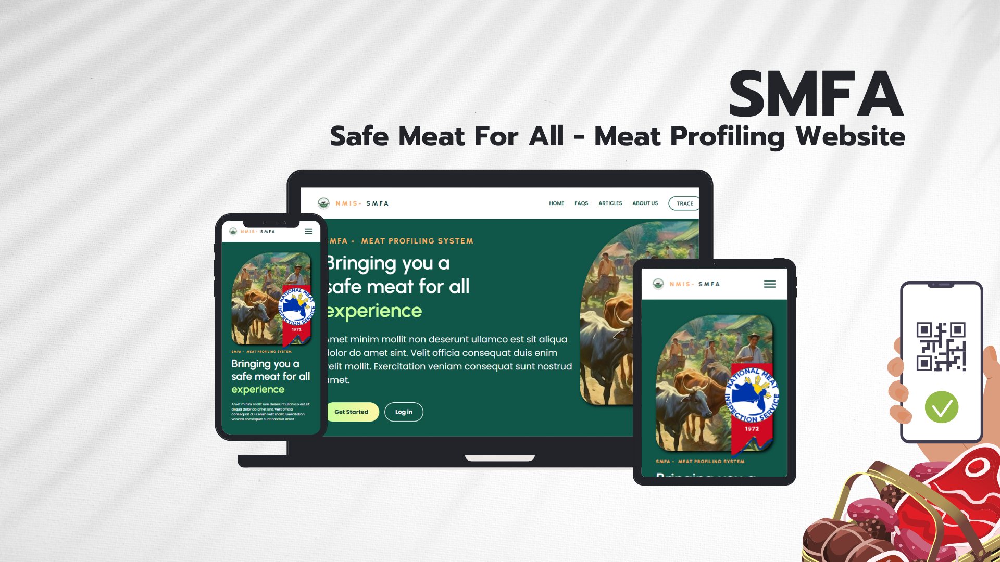
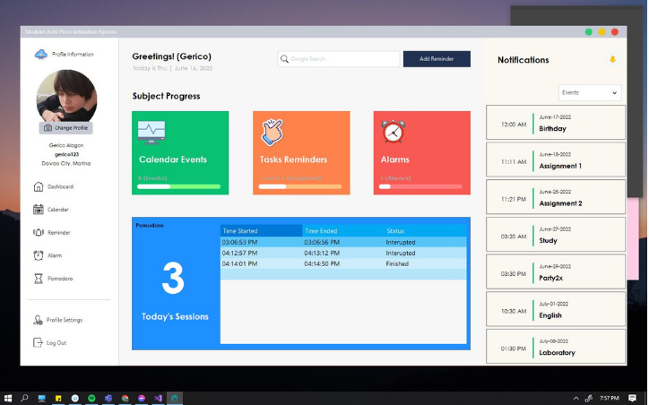

SELECTED BUILDS / 04 WORKSPACES
Systems built around real work.
A collection of fraud operations, public-sector, administrative, and productivity systems. Open any build to explore the project context, key features, and every attached screen.

01 · WORK PROJECT · NZXT / WHIM
FraudOps
A centralized fraud and risk operations platform for order review, dispute tracking, financial impact reporting, fraud trends, and team collaboration.

02 · GOVERNMENT PROJECT · DOST
NMIS Website
A responsive meat profiling and supply decision-support system using centralized records, predictive analysis, and geospatial visualization.

03 · UNIVERSITY PROJECT · VOYAGER YEARBOOK
Yearbook Management System
A role-based administrative workspace for student registration, records, announcements, yearbook planning, course sections, and claiming workflows.

04 · UNIVERSITY PROJECT · PRODUCTIVITY
Anti-Procrastination System
A personal productivity workspace combining progress tracking, reminders, alarms, calendar events, and focused Pomodoro sessions.